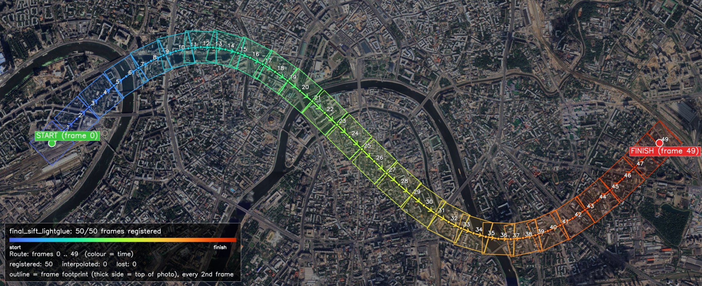
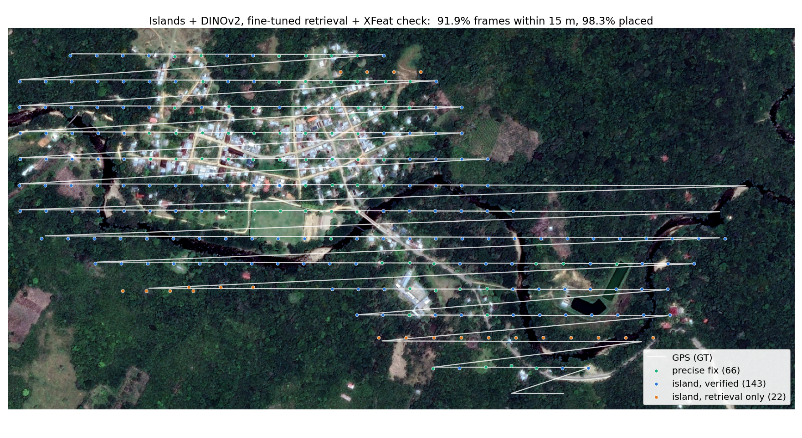
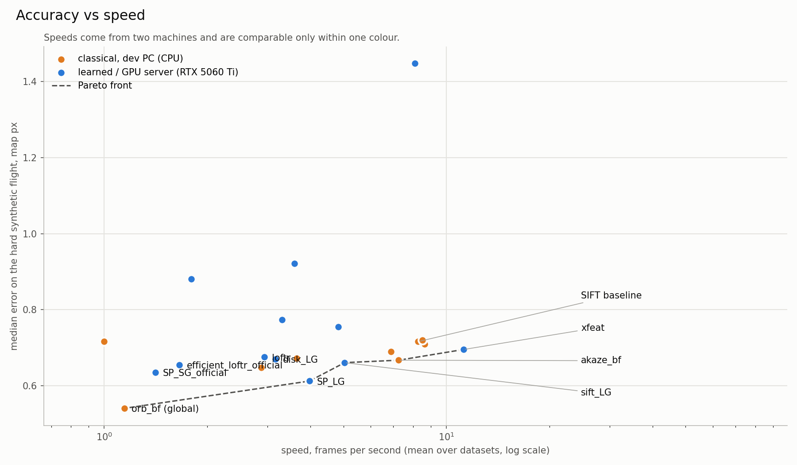
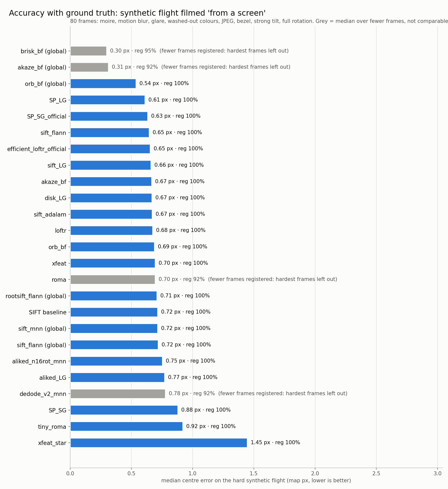
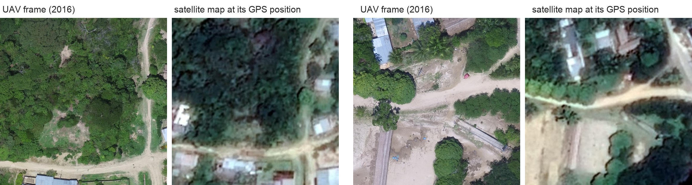
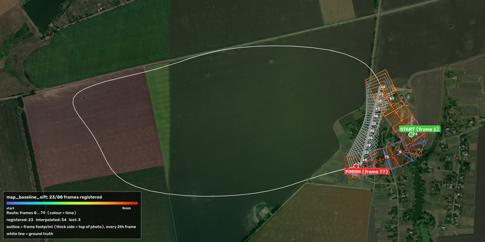

вчимо останні блоки ViT + голову:
кроків, хв, ГБ, vast.ai
Відкладені райони, топ-1: Горгани →%
Тилігул →%
05 · Вибір методу
SIFT + LightGlue — стабільно в трійці найкращих
SIFT + LightGlue — найкращий на найважчих парах, ~0.2 ГБ VRAM,
працює на GTX 1650
DISK + LightGlue — найкращий на полях, але до ~12 ГБ відеопам'яті
LoFTR — найкращий над водою, слабший на парах і менш плавний на відео
06 · Результат · Standard
з кадрів на мапі

/
кадрів прив'язано
правильних відповідностей на кадр
px
точність: медіанна похибка на синтетиці з GT
px
узгодженість гомографії (репроєкція інлаєрів), не точність
кадр/с на GTX 1650
07 · Результат · Advanced
Власне відео: позиція дрона в кожному кадрі
/
ключових кадрів прив'язано
відповідностей на кадр
узгодженість маршруту, мед. / p95, px
ключових кадрів у 3 відео — усі на мапі
08 · Справжній політ
Справжній політ: 0% → %, якщо відомий масштаб кадру
0%→%
якщо відомий масштаб кадру; без нього —
% кадрів у межах 5 м · UAV-VisLoc, Перу,
кадрів, справжній GPS; мапа — інший сенсор і рік
01Островисусідні кадри дрона — SIFT + RANSAC (працює і над лісом)
02DINOv2топ-10 схожих тайлів мапи для кожного кадру
03РозміщенняRANSAC кладе весь острів на мапу, XFeat перевіряє
Чесно: масштаб кадру взято з цього ж польоту. З апріорним масштабом —
%. Далі — підбір масштабу без GPS.

Звичайний трекінг: 0 % у всіх методів. DINOv2 без донавчення розміщує
з островів, донавчений —
. Та сама прив'язка ловить підробку GPS:
% атак, хибних тривог,
тривога на ~ м зсуву, похибка м замість
м.
09 · Підробка GPS
Камера помічає підробку GPS і виправляє позицію
% атак виявлено,
хибних тривог, тривога на ~ м
зсуву, похибка м замість м
UAV-VisLoc 24, плавних атак (GPS відтягується на 3 м/кадр);
тривога — 3 візуальні прив'язки поспіль далі 15 м від GPS. Обмеження: дрейф інерціальної навігації не змодельовано.
10 · Підсумок
Що ми маємо
/
Standard: кадрів завдання на мапі
Advanced: ключових кадрів відео — усі на мапі
%
≤ ~4 м на 9 районах (бейзлайн %) — синтетика: кадри з того ж знімка
→%
топ-1 DINOv2: Горгани; Тилігул →%
Висновки
Класичний SIFT + сучасний матчер LightGlue — стабільний вибір і працює на слабкій GPU
Слабке місце — не точки, а підбір відповідностей і місцевість без ознак
На справжньому польоті рятують острови й донавчений DINOv2 (якщо відомий масштаб)
Візуальна прив'язка ловить підробку GPS і виправляє позицію
Стрес-тест: найсильніше ламають хмари й темрява
Що далі
Масштаб кадру без GPS — перебір і вибір за підтвердженнями
Більше справжніх польотів для донавчання
Злиття з одометрією, щоб «перелітати» воду й ліс
Дякуємо! Питання?
Демо
Застосунок єДрон у дії
Запис екрана, 4:27. Місія «Свої дані»: відео з телефона, кожен 5-й кадр (400 кадрів) локалізується
бейзлайном SIFT + FLANN на CPU (~2 кадри/с), маршрут наростає на мапі наживо. Запуск: python -m app
Додаток
Детальні таблиці і запасні слайди
Протокол, метрики, усі методи, абляції, відео, реальний політ і спуфінг GPS, обмеження
Задача
Що треба було зробити
Standard
Мапа global_map.png і кадрів із дрона
Знайти кожен кадр на мапі (keypoints + descriptors)
Намалювати маршрут: START / FINISH, порядок, контури кадрів
Advanced
Власне відео: телефон знімає мапу з монітора
Маршрут за кадрами відео
Відео з поточною позицією дрона
Наша додаткова мета: порівняти класичні й навчені методи за метриками з точним ground
truth і обрати найкращий, а не за кількома вдалими кадрами.
Дані
Мапа, кадри завдання і власні відео
Мапа 3645×1845 px, місто з річкою
Кадр у ~4 рази детальніший за мапу (масштаб 0.25)
Косий ракурс, фасади й тіні, інші кольори
Відео з екрана: муар, відблиски, рамка монітора, нахил, поворот
Вгорі — кадри завдання; внизу — кадри трьох власних відео
(разом ключових кадрів, кожен 5-й кадр відео)
Підхід
Конвеєр локалізації кадру на мапі
1. ІніціалізаціяSIFT + FLANN по всій мапі: де ми взагалі?
→
2. ТрекінгПрогноз позиції, вікно мапи навколо неї; кадр повернуто
за курсом і зведено до масштабу мапи
→
3. ВідповідностіКлючові точки + матчер (SIFT + LightGlue у фіналі)
→
4. ГомографіяMAGSAC++ і перевірка правдоподібності
→
5. МаршрутВідсів викидів, інтерполяція пропусків, мапа і відео
Кадр завдання (ліворуч) і вікно мапи: відповідності SIFT + LightGlue, зелений — знайдений
контур кадру. Кадр повернутий і в 4 рази детальніший за мапу.
Кадр i → мапа: $\;\mathbf{x}_{map} \sim H_i\,\mathbf{x}_{frame}$; центр і контур кадру —
це $H_i$, застосована до центру й кутів фото.
Втратили кадр (вода, поле) → повертаємось до кроку 1. Масштаб мапи на екрані невідомий — береться з
гомографії ініціалізації й відстежується.
Бейзлайн
SIFT + FLANN + MAGSAC++ по всій мапі
/
кадрів завдання прив'язано
inliers на кадр (середнє)
кадр/с, CPU
px
медіанна похибка, синтетика «з екрана»
Бейзлайн уже розв'язує Standard: усі кадри знайдено, маршрут правильний.
Питання — де він ламається.
Протокол оцінювання
Три незалежні тести з точною відповіддю
1. Мапа завдання і власні відео. Синтетичні польоти над мапою з точним GT
(у т. ч. «знято з екрана»); на реальних відео — узгодженість без GT.
2. Пари з точним GT. Вирізки однієї ортофотомапи; справжній зсув знайдено перебором
за збігом пікселів — без жодного матчера. пар на варіант.
3. Будь-яка місцевість. районів із супутникових тайлів
( кадрів): місто, ліс, піски, степ, вода, поля.
9 районів тесту «будь-яка місцевість»: мапа і приклади кадрів
Метрики
Що саме ми міряємо
Метрика
Визначення
Одиниці
Похибка центру
$e_i = \lVert \hat{c}_i - c_i^{GT} \rVert$ — відстань між знайденим і справжнім
центром кадру на мапі
px мапи; у районах також метри (1 px ≈ 0.76–0.82 м)
Успіх @τ
частка усіх кадрів з $e_i \le \tau$, τ = 5 / 10 / 25 px; кадр без позиції —
невдача
%
Прив'язано
частка кадрів, для яких гомографія пройшла всі перевірки
%
Похибка кутів (пари)
середня відстань 4 кутів кадру між оцінкою і GT; успіх ≤ 1 / 3 / 10 px
px
Узгодженість (без GT)
$\lVert H_i\,T_{i,i+1}\,c - H_{i+1}\,c \rVert$: прив'язка кадру i плюс
перехід до i+1 проти прив'язки кадру i+1; медіана і 95-й перцентиль
px мапи
Швидкість, пам'ять
кадрів за секунду; пік відеопам'яті
кадр/с, МБ
Порівняння методів · тест 1
Синтетика «з екрана» над мапою завдання: сильні методи майже рівні
Похибка центру на 80 кадрах із муаром, розмиттям, відблисками, JPEG і нахилом. Усі методи
знаходять 100 % кадрів у межах 5 px; різниця медіан — менше 0.1 px. На реальних відео всі методи прив'язують
100 % кадрів; узгодженість найкраща в SIFT, але ця метрика сама рахується через SIFT і йому підіграє.
Точність проти швидкості

Точність на синтетиці «з екрана»

Порівняння методів · тест 2
Пари з точним GT: точність і стійкість до спотворень
«Геометрія» — другий кадр повернуто на ±15° і масштабовано 0.75–1.3; «спотворення» —
ще й муар, розмиття, відблиск, JPEG, рамка. Похибка кутів кадру 512 px. SIFT + FLANN найточніший, коли
знайшов відповідність, але зі спотвореннями знаходить її лише для ~40 % пар; SIFT + LightGlue — для ~85 %.
Усі методи на парах
Порівняння методів · тест 3
Будь-яка місцевість: кадрів у 9 районах
Похибки по кожному кадру всіх районів, переведені в метри за масштабом кожної мапи.
Хибних прив'язок майже немає — методи розрізняються тим, чи втрачають кадр над полем, водою, лісом.
Великий 95-й перцентиль — це кадри, де позицію інтерпольовано між рідкими прив'язками.
Класичні методи на районі Львова, 30 кадрів на точку, ті самі спотворені кадри для всіх методів.
Найсильніше ламають хмари й темрява; відносний порядок методів показовий, абсолютні відсотки оптимістичні
(кадри й мапа — один знімок).
Абляції
Що справді важливо в конвеєрі
Крок
Варіант
похибка, px
Висновок
Деротація за курсом
є / немає / перебір 4 поворотів
/ /
потрібна: без неї ~80 % кадрів лише через ре-ініціалізацію
Масштаб кадру
0.25 / 0.35 / 1.0
/ /
кадр, ближчий до масштабу мапи, точніший і швидший:
проти кадр/с
Згладжування Savitzky–Golay
немає / вікно 7 / вікно 15
/ /
шкодить: стирає різкі повороти
Оцінювач
MAGSAC++ / RANSAC / USAC, поріг 2–8 px
±0.03
майже без різниці на синтетиці
Пошук
одна мапа / тайли
0.72 / 1.02
тайли гірші й у 40× повільніші
Медіанна похибка центру на синтетиці «з екрана», px мапи.
Абляція: поворот
Абляція: масштаб кадру
Абляція: згладжування
Фінальний метод
SIFT + LightGlue: стабільно в трійці найкращих на всіх тестах
Найкращий на найважчих парах; поля % проти
% у бейзлайну
Точки SIFT — субпіксельні, на чистих даних не гірший за бейзлайн
Ініціалізація й повернення після втрати — SIFT + FLANN по всій мапі
DISK + LightGlue — найкращий на полях, але до ~12 ГБ VRAM
LoFTR — найкращий над водою, слабший на парах і менш плавний на відео
Результат · Standard
50 кадрів завдання: маршрут на мапі
Фінальний метод: / кадрів,
inliers на кадр, кадр/с на GTX 1650.
Колір — час, контури — розмір і поворот кадру.
Результат · у цифрах
Фінальний метод на всіх наших даних
Усі кадри прив'язано на всіх чотирьох наборах. Δ від бейзлайну — відстань між маршрутами
фінального методу і SIFT + FLANN: менше 1 px мапи, тобто на даних завдання обидва методи дають той самий маршрут;
перевага фінального — стійкість на складній місцевості.
Результат · Advanced
Власне відео з екрана: поточна позиція дрона
IMG_0062 (вертикальне, складне): /
ключових кадрів. Ліворуч — камера і мапа навколо дрона, праворуч — маршрут.
Третє відео: сильний крен і перспектива
/ ключових кадрів.
Перше відео: петля над центром
/ ключових кадрів.
Реальний політ
Справжній дрон, справжній GPS: SIFT — 0 %

UAV-VisLoc, політ №24 (Перу):
кадрів зі справжнім GPS, мапа — інший сенсор і рік. Вікно пошуку довкола справжньої позиції (верхня межа для
«матчер + мапа»). Навчені методи прив'язують до % кадрів, і там, де прив'язали,
похибка ~ м — це вже справжня похибка навігації.
Бонус
Мозаїка кадрів поверх мапи і GPS-координати
50 кадрів дрона, накладені на мапу власними гомографіями. Для районів із тайлів маршрут
експортується в lat/lon, GeoJSON та інтерактивну мапу.
Бонус
Маршрут у GPS: інтерактивна мапа
Район «Київ, Дніпро»: зелені точки — кадр прив'язано, помаранчеві — інтерпольовано над водою; клік на кадр —
координати, курс, inliers. Супутник / вулиці, шари вмикаються праворуч. Потрібен інтернет (тайли Esri).
Провали й обмеження
Що не працює і що ми знайшли дорогою
Вода, однорідні поля, степ — кадр без ознак; рятує лише трекінг сильним матчером
Швидкість: фінальний метод –
кадр/с на відео проти 5–9 у бейзлайну
Метрики без GT упереджені — узгодженість через SIFT підіграє SIFT
Efficient LoFTR із transformers — лише грубі відповідності (сітка 8 px); офіційна версія працює

Бейзлайн SIFT + FLANN на полях Полтавщини: прив'язка лише над селом,
між рідкими фіксами маршрут іде навпростець через поле (похибка до ~1.7 км). Фінальний метод на тих самих
кадрах тримає % кадрів у межах 5 px.